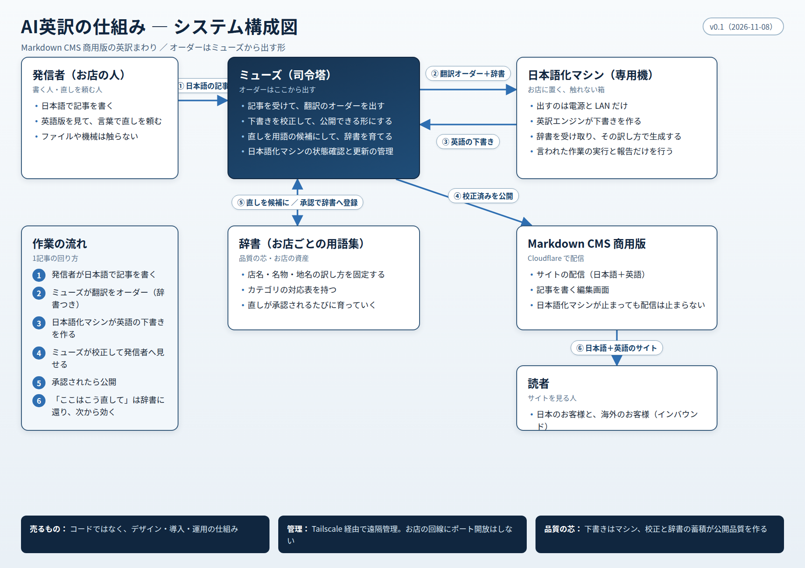

日本語で記事を書くと、英語版も付いてくる仕組みの構成です。
発信者が触るのは「書く」と「直しを伝える」だけ。翻訳の下書き、校正、辞書づくりは裏側で回ります。

日本語で記事を書く。公開された英語版を見て、直したい所があればミューズに言葉で伝える。ファイルや機械を直接触ることはない。
発信者の窓口。英訳の校正をして公開できる品質にする。直しのうち恒常的なものは辞書の登録候補にし、作業のオーダーを各所へ出す。
お店に置かれる、触れない箱。電源とネットワークだけ。出て行く通信だけで記事を受け取り、英訳エンジンで下書きを作って戻す。外から穴を開ける必要はない。
店名の読み、名物、地名、カテゴリの対応を、お店ごとに固定したもの。ミューズが管理し、マシンへ配る。記事が増えるほど育ち、下書きの崩れが小さくなる。
日本語版と英語版を配信する。配信はマシンとは独立していて、マシンが止まってもサイトは動き続ける。
日本語版と英語版を、言語切り替えで読む。海外の読者にも、お店の情報がそのまま届く。
書く ― 発信者が、日本語で記事を書く。
下書き ― 日本語化マシンが記事を取りに行き、辞書を使って英訳の下書きを作り、置き場に戻す（1記事およそ1分）。
校正 ― ミューズが下書きを通読し、意味のずれ、用語の揺れ、固有名詞の読みを直す。
承認・公開 ― 発信者が確認して承認すると、英語版がサイトに公開される。
伝える ― 発信者が英語版を見て、「ここはこう直して」とミューズに言う。
分ける ― ミューズが、その記事だけの直しか、辞書に入れるべき恒常的な直しかを判断する。
登録・反映 ― 承認された直しは辞書に登録され、マシンへ配られる。次回からは、最初からその訳で下書きが出る。
この図は、Markdown CMS 商用版への搭載を検討中の「英訳の仕組み」の構成案です（2026-11-08 時点）。
実証済みの部分: ローカル環境での英訳の下書き生成、校正、英語版の公開までの一巡（Techブログ1記事、グルメサイト5店舗で公開済み）。